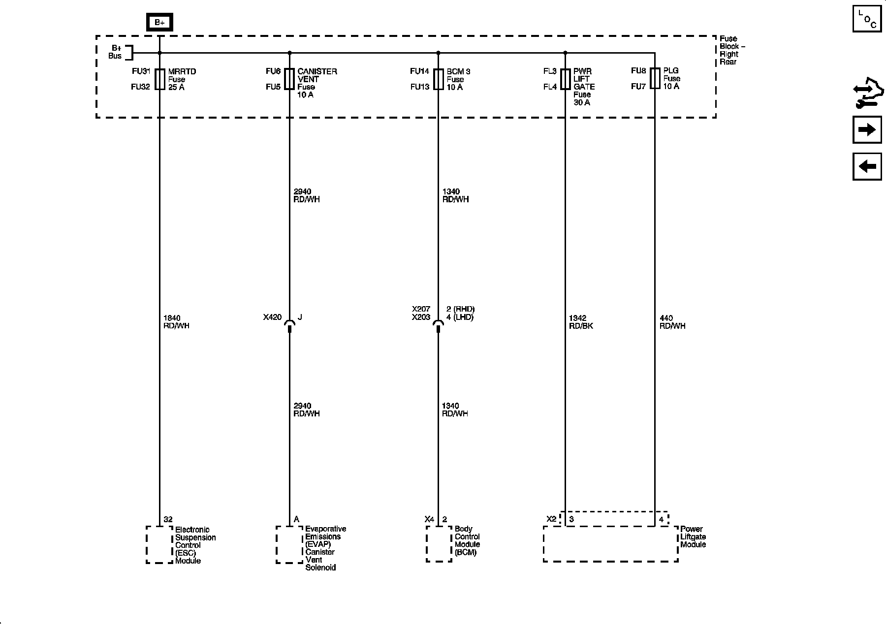

Operation CHARM
: Car repair manuals for everyone.
Home
>>
Cadillac
>>
2008
>>
SRX AWD V8-4.6L
>>
Repair and Diagnosis
>>
Diagrams
>>
Electrical Diagrams
>>
Starting and Charging
>>
Power and Ground Distribution
>>
System Diagram
>>
Power Distribution Diagrams
>>
Power Distribution Diagram 17
Power Distribution Diagram 17
Power Distribution Schematics
BCM 3 Fuse, CANISTER VENT Fuse, MRRTD Fuse, PLG Fuse, and PWR LIFT GATE Fuse
